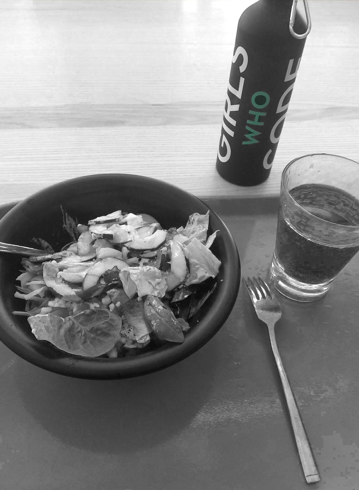

I will be upcoming senior in the fall of 2018 at Piedmont Hills High School.
My mom, dad, other brother, and my uncle's family lives with me.
Hobbies:
I really enjoy volunteering to Loaves and Fishes, race events, and Sacred Heart.
Sang in choir for 4 years
I knit my own hats.
Meditation usually calms me down and helps me fall asleep at night.
Recent Projects
A few of my favorite projects I created Build Your Own Adventure Game and The Underwater Sea Game in Scratch. I learned how to create loops, conditionals, and move the character sprite using arrow keys.

Despite being a beginner, I am interested in editing photos, especially in Photoshop.
I use online classes on Lynda.com and Udemy to learn skills on Photoshop and then creating my own images.
One of my proudest project is being able to write an introduction of myself almost entirely in Mandarin Chinese. I have been learning Chinese for a little over three months to be at a conservational beginning level.
Learning a new language is one of my hobbies because I want to be able to understand and connect with people that I can't truly achieve without speaking their language first.
Achievements
Interactor of the Month October 2018. For dedicating hours to serving my community by giving a helping hand to serve food to the homeless, maintain the municipal garden, and keeping the Coyote Creek area clean.
AP Scholar Award 2018
Academic Interests
Computer science
Biology, mainly in human physiology
Foreign languages, especially Chinese, Korean, and Vietnamese
Likes:
Kpop boy groups
Taking walks around the park and observing the nature around me.